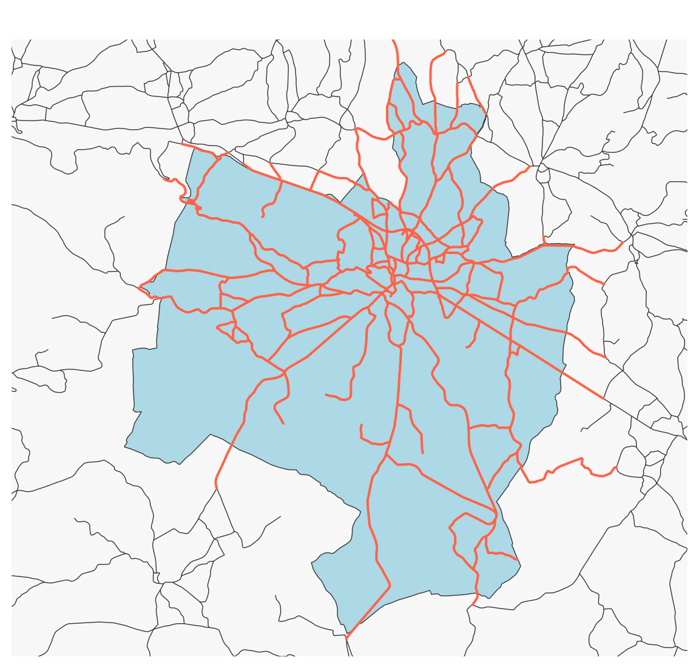

mun <- st_read("data/lot.gpkg", layer = "communes", quiet = TRUE)
roads <- st_read("data/lot.gpkg", layer = "routes", quiet = TRUE)
gramat <- mun[mun$NOM_COM == "Gramat", ]
road_gramat <- st_filter(x = roads,
y = gramat,
.predicate = st_intersects)
# Plot
library(mapsf)
mf_map(gramat, col = "lightblue")
mf_map(roads, add = TRUE)
mf_map(road_gramat, col = "tomato", lwd = 2, add = TRUE) 